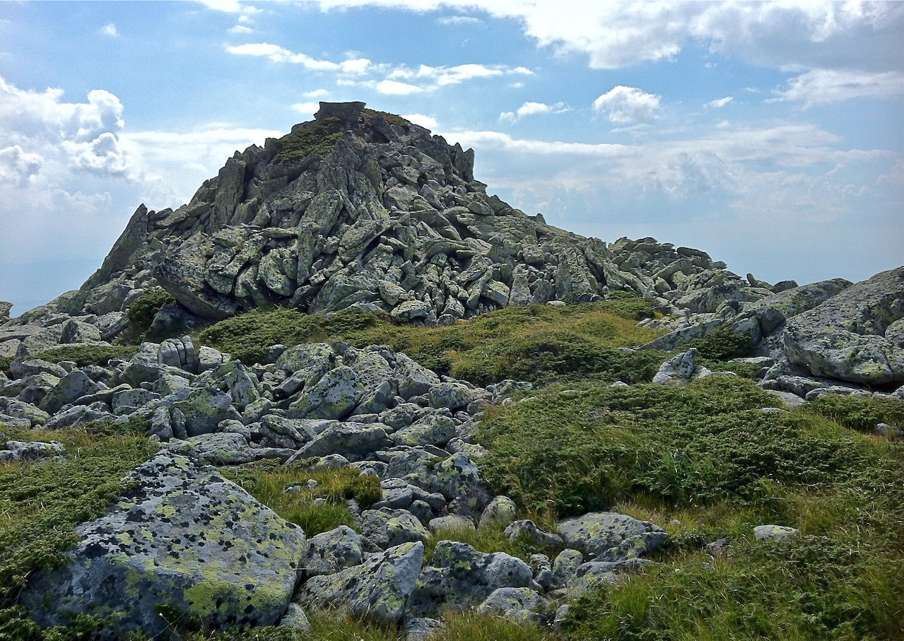

Rocas
Plutonicas
Rocas Metamorficas
Las rocas metamórficas son las rocas que derivan de la transformación de otras rocas sin pasar por la fundición. Por ejemplo, el granito se metamorfiza en gneis, la caliza forma mármol y las areniscas ricas en sílice se fusionan en cuarcita. Las rocas metamórficas se caracterizan por ser más duras, compactas y resistentes y tener una estructura cristalina reorientada. El proceso del metamorfismo ocurre comúnmente en zonas de altas temperaturas y presión, como en las zonas tectónicas y a grandes profundidades. Foliada: presencia de placas u ondas de minerales claros y oscuros, como en el gneis. No foliada: ausencia de placas, como cuarcita y mármol.
Ejemplos: Esquito verde - Cuarcita - Epidosita - Gneis - Anfibolita.
Rocas Volcanicas Intrusivas
Las rocas intrusivas/plutónicas son aquellas que se forman a partir del enfriamiento y consolidación de un magma (se le llama así al material rocoso fundido, mezcla de gases, líquidos y cristales, que se forma en el interior de la Tierra). También podemos nombrarlas rocas magmáticas. Los piroclásticos (del griego pyro, fuego, y klastos, quebrado), son producto de las erupciones volcánicas explosivas y contienen fragmentos de roca de diferentes orígenes, pueden ser de muchas formas y tamaños.
Ejemplos: Granito - Riolita - Granodiorita - Cuarzolatita - Sienita - Diorita - Gabro - Basalto - Andesita.